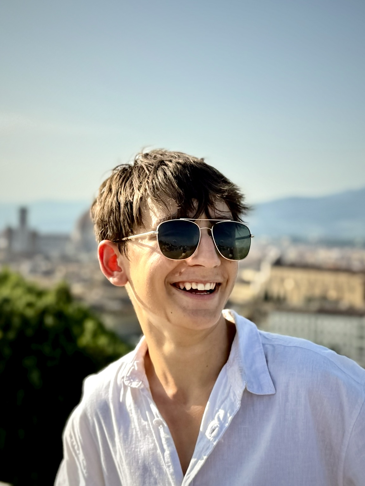
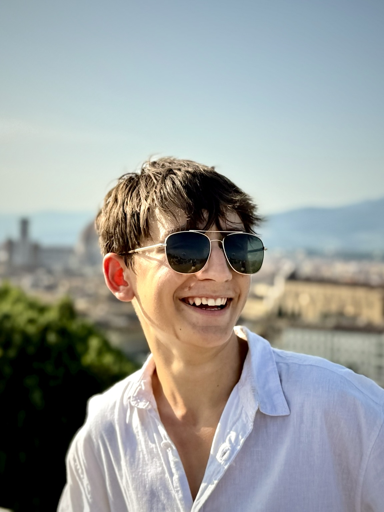
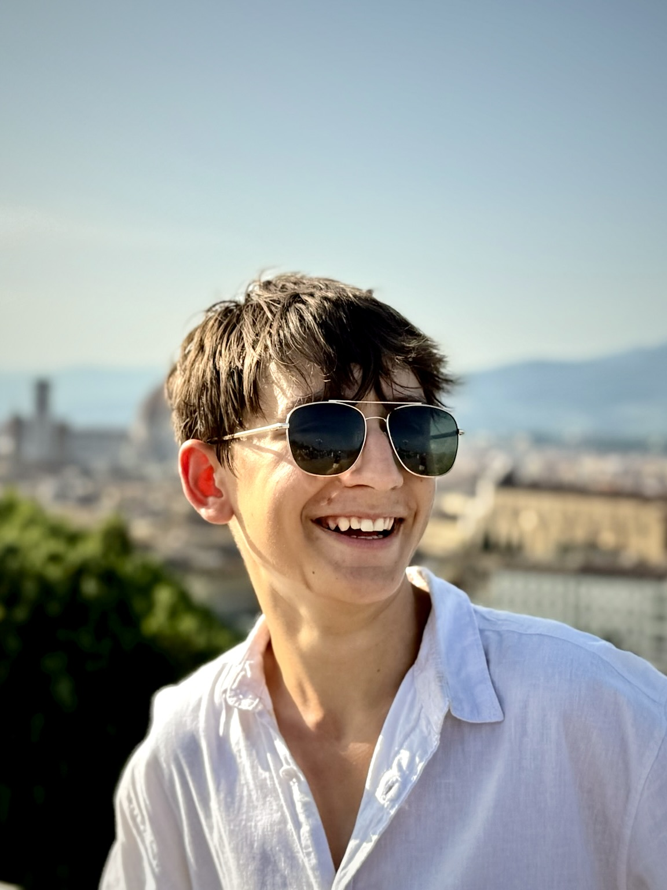

Some Images
 

My personal website
Joshua Kemp — a student, roboticist, and debater with an affinity for craftsmanship. I believe in engineering with elegance, speaking with precision, and living with intention. Whether it's code, competition, or conversation, I bring old-world diligence into a digital age.
Part of the world-renowned FIRST Robotics Competition — our teams engineered autonomous machines with sophistication and resolve. My contributions included strategy, design, and software logic refined through iteration and intent.
From regional challenges to state-level showdowns, I've helped run these FTC teams that thrived on precision mechanics, clean code, and poise under pressure. Robotics is more than tech — it's teamwork, timing, and tenacity.
Structured arguments. Intellectual flair. QDU’s state finals became a proving ground for rhetoric and rhythm. As speaker for the our team, I combined logic with elegance — and delivered it all in a crisp tone.

If your vision requires precision, grace, or a spark of originality — let's talk. Reach out via contact@joshuak.me.
You’ll also find me on My Portfolio, GitHub, and Spotify.